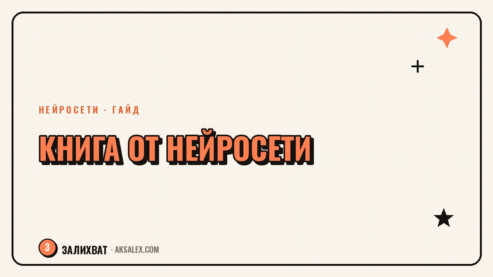

Как нейросеть поможет выбрать книгу для чтения

Выбрать следующую книгу иногда тяжелее, чем её дочитать. Рекомендации друзей не совпадают со вкусом, подборки блогеров устаревают до того, как доходят до библиотеки, а алгоритмы соцсетей гонят одни и те же топы. Нейросеть в этом смысле удобнее: она не обижается на отказ и готова перебирать варианты, пока не найдётся то, что откликается именно сейчас. Разбираем, как спрашивать у неё совет и где она может подвести.
Зачем спрашивать совет у нейросети, а не у блогера
У блогера и алгоритма соцсети есть своя логика: им выгодно советовать то, что уже популярно, или то, за что заплатили. Нейросеть в этом смысле нейтральнее - она не продвигает конкретное издательство и не зависит от того, что сейчас в трендах. Ты описываешь запрос, она подбирает варианты именно под него, а не под то, что должно собрать больше реакций.
Разница особенно заметна, когда вкус специфический: нужна не очередная «книга про продуктивность», а конкретно короткая художка без грустного конца, которую можно дочитать за выходные. Живому человеку объяснять такие детали неловко и долго, а нейросети - без разницы, сколько уточнений ты добавишь.
Когда совет нейросети особенно полезен
- Нужно быстро закрыть конкретный запрос - книга в дорогу, для подростка, для учёбы
- Вкус специфический, и обычные топы не подходят
- Хочется расширить жанр, но страшно потратить время на неудачный выбор
- Под рукой нет знакомого, кто читает в нужном жанре
Какие сервисы умеют советовать книги
Отдельного сервиса «нейросеть для книг» на российском рынке немного, зато с подбором литературы справляются обычные языковые модели и голосовые помощники, которые у многих уже установлены. Разница - в том, как удобно формулировать запрос и насколько сервис знает именно русскоязычную литературу.
| Сервис | Что умеет | Нюанс |
|---|---|---|
| ChatGPT | Подберёт список книг по теме, настроению, объёму | Нужно чётко описать запрос, иначе выдаст общие бестселлеры |
| YandexGPT и Алиса | Отвечает на голосовой запрос прямо в приложении | Хорошо ориентируется в русскоязычной литературе |
| GigaChat | Работает в Telegram и на сайте Сбера | Иногда путает автора и серию, стоит проверять |
| ИИ-подборки в читательских приложениях | Учитывают историю твоего чтения и оценки | Точность зависит от того, сколько книг ты уже оценила |
Для разового совета хватит бесплатного тарифа любого из сервисов. Платная версия имеет смысл только если ты планируешь регулярно обсуждать с нейросетью не только книги, но и другие задачи.
Как сформулировать запрос, чтобы совет был точным
Главная ошибка - просить «посоветуй хорошую книгу». Для нейросети это слишком общий запрос, и она честно выдаёт то же, что выдала бы любому: топ продаж или классику, которую уже все читали. Чтобы получить персональный совет, запрос нужно собрать из деталей, которые у тебя и так есть в голове.
- Настроение, в котором ты сейчас - хочется лёгкости, напряжения или утешения
- Объём и темп - книга на вечер, на отпуск или на месяц
- Что понравилось раньше - автор, книга или даже фильм с похожей атмосферой
- Что точно не подходит - исключи жанры и темы заранее
Хорошая подсказка для нейросети - не «посоветуй книгу», а всё, что ты рассказала бы другу перед тем, как попросить у него совет.
Где нейросеть ошибается и как это заметить
Нейросеть иногда путает автора, год издания или содержание книги, особенно если книга не слишком известна или вышла недавно. Она может уверенно описать сюжет, которого в книге нет, потому что собрала ответ из похожих описаний, встреченных в интернете, а не из самого текста.
Второй частый промах - совет без учёта контекста. Если не указать, что книга нужна на русском и в бумажном виде, нейросеть легко предложит англоязычный бестселлер без перевода или редкое издание, которое не купить в обычном магазине.
Три частых промаха
- Путает сюжет или автора у малоизвестных книг
- Советует без оглядки на язык, формат и доступность
- Повторяет один и тот же топ, если запрос звучит слишком обще
Поэтому финальное решение всегда проверяй сама: открой карточку книги в магазине или библиотеке и прочитай аннотацию, прежде чем садиться за чтение.
Как собрать свою систему подбора книг
Если книги в твоей жизни - это не разовая история, а регулярная привычка, стоит выстроить маленькую систему, а не спрашивать совета каждый раз с нуля.
- Заведи один чат с нейросетью специально под книги - так она запомнит контекст прошлых разговоров
- После каждой прочитанной книги коротко пиши, что понравилось и что нет - этот список пригодится для следующего запроса
- Раз в месяц проси нейросеть предложить 3-5 вариантов в разных жанрах, а не один
- Сверяй совет с отзывами на книгу перед покупкой
Стоит ли полностью доверять нейросети выбор книг
Нейросеть - это ассистент для сужения списка, а не финальный судья твоего вкуса. Она хорошо справляется с рутинной частью: перебрать десятки вариантов и предложить те, что подходят под твой запрос.
Окончательное решение лучше оставить себе: прочитать первую главу или отрывок, посмотреть, цепляет ли стиль автора. Так ты экономишь время на подборе, но не теряешь ощущение, что книгу выбрала именно ты.
Частые вопросы
Какая нейросеть лучше всего советует книги?
Однозначного лидера нет - большинство общих нейросетей вроде ChatGPT, YandexGPT или GigaChat справляются с подбором книг примерно одинаково хорошо. Выбирай по тому, какой сервис у тебя уже установлен и привычен, и не бойся спросить совет у двух разных нейросетей сразу.
Может ли нейросеть посоветовать книгу бесплатно?
Да, для разового совета достаточно бесплатного тарифа любого популярного сервиса. Платная версия нужна только если ты планируешь использовать нейросеть регулярно и для других задач, а не только для подбора книг.
Почему нейросеть иногда путает сюжет или советует несуществующие детали книги?
Она собирает ответ из описаний, которые встречала в интернете, и может перепутать детали у малоизвестных изданий. Перед тем как брать книгу в руки, стоит проверить аннотацию и отзывы в книжном магазине или библиотеке.
Как объяснить нейросети свой вкус, если сложно его сформулировать?
Опиши не жанр, а ощущение - какую книгу ты дочитала не отрываясь и почему, что точно надоело. Нейросеть соберёт из этих деталей более точный совет, чем из одного названия любимого автора.
Подходит ли совет нейросети для подбора книг ребёнку?
Да, но обязательно уточни возраст, объём и тему, которая сейчас интересна ребёнку. Финальный выбор лучше проверить самостоятельно - пролистать книгу или почитать отзывы родителей перед покупкой.
Раз тема оказалась полезной, вот что почитать следующим. Что делать, если любимое дело растёт медленнее, чем ты ждал, и как не бросить его на ровном месте.
Читать статью →а не вручную